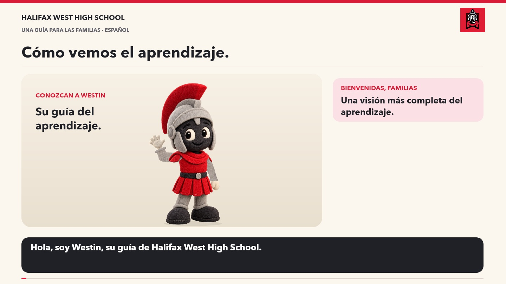

Producto
Trabajo que los estudiantes crean o completan: pruebas, tareas, proyectos y presentaciones.
TODAS LAS MATERIAS. UN PANORAMA MÁS COMPLETO.
Acompañe a Westin para conocer lo que los estudiantes crean, explican y hacen, y cómo los docentes utilizan esa evidencia.

El movimiento reducido está activado: escuche la narración con ilustraciones fijas de cada capítulo.
No se pudo cargar el video o el audio. Lea la transcripción completa que aparece abajo.
Voz: Dalia · español de México
DOS PREGUNTAS DIFERENTES
Trabajo que los estudiantes crean o completan: pruebas, tareas, proyectos y presentaciones.
Los estudiantes explican su razonamiento en discusiones, reuniones, entrevistas o reflexiones.
Los estudiantes demuestran habilidades, procesos y aprendizaje durante actividades prácticas.
Evaluación utilizada para ofrecer retroalimentación y orientar los próximos pasos. Los estudiantes la usan para practicar, revisar y mejorar.
Evaluación utilizada para valorar el aprendizaje según criterios establecidos. Puede utilizar productos, conversaciones u observaciones.
P, C y O describen tipos de evidencia. No crean automáticamente tres partes iguales de la calificación.
LEER UN TÍTULO EN POWERSCHOOL
C — SUM — Explaining a literary interpretation
Una conversación sumativa sobre la comprensión de un texto. El ejemplo conserva el título en inglés que puede aparecer en PowerSchool; la explicación está traducida. Consulte la descripción y los comentarios del docente para conocer el aprendizaje concreto que se evalúa.
ENTREGA Y COMPRENSIÓN
Completar una tarea y comprender lo aprendido nos dicen cosas diferentes. Revise el estado de entrega junto con los comentarios: un trabajo entregado todavía puede necesitar mejoras. Algunas actividades de práctica en clase pueden no aparecer como entradas separadas en PowerSchool. El docente puede explicar dónde encontrar las tareas diarias y cómo dar seguimiento a los trabajos pendientes.
¿Qué estás aprendiendo?
¿Qué comentarios has recibido?
¿Cuál es tu próximo paso?
Hola, soy Westin, su guía de Halifax West High School. En todas las materias, los estudiantes muestran lo que han aprendido a través de lo que crean, explican y hacen. Veamos cómo interpretar esa información en PowerSchool.
Comenzamos con metas de aprendizaje y criterios de logro claros. En matemáticas, inglés, ciencias, educación física y otras materias, nos preguntamos: ¿qué comprende el estudiante y qué puede hacer?
P significa producto: el trabajo que un estudiante crea o completa. La solución de un problema, un ensayo, una prueba o un informe de laboratorio pueden mostrar el aprendizaje. El trabajo terminado es una parte del panorama.
C significa conversación: los estudiantes explican su razonamiento. Pueden explicar una estrategia, fundamentar una interpretación o comentar un resultado científico. El docente escucha para valorar la comprensión según los criterios de aprendizaje.
O significa observación: habilidades y aprendizaje que se demuestran en la práctica. En biología, puede ser enfocar un microscopio; en educación física, controlar el bote de un balón o aplicar una habilidad de movimiento. El docente observa la técnica y la comprensión relacionadas con la meta de aprendizaje.
FORM significa evaluación formativa: se utiliza para ofrecer retroalimentación y orientar los próximos pasos. Los estudiantes utilizan esa retroalimentación para practicar, revisar y mejorar. Ayuda a responder: ¿en qué debo trabajar ahora?
SUM significa evaluación sumativa: se utiliza para valorar el aprendizaje según criterios establecidos. Los productos, las conversaciones y las observaciones pueden utilizarse con cualquiera de los dos propósitos. Estos tipos de evidencia no representan tres partes iguales de la calificación.
En PowerSchool, la primera letra identifica el tipo de evidencia. FORM o SUM identifica el propósito, seguido de un título claro de la actividad. Por ejemplo, C, SUM y explicar una interpretación literaria indican una conversación sumativa sobre la comprensión de un texto.
Completar una tarea y comprender lo aprendido nos dicen cosas diferentes. Revise el estado de entrega junto con los comentarios: un trabajo entregado todavía puede necesitar mejoras. Algunas actividades de práctica en clase pueden no aparecer como entradas separadas en PowerSchool. El docente puede explicar dónde encontrar las tareas diarias y cómo dar seguimiento a los trabajos pendientes.
En casa, pregunte: ¿qué estás aprendiendo? ¿Qué comentarios has recibido? ¿Cuál es tu próximo paso? Si una entrada no está clara, comuníquese con el docente. Juntos podemos apoyar el próximo paso en el aprendizaje.